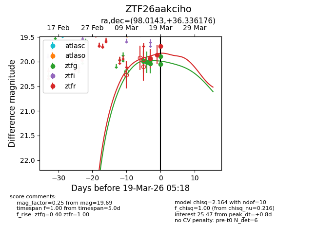
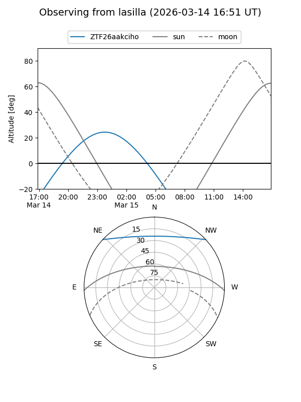
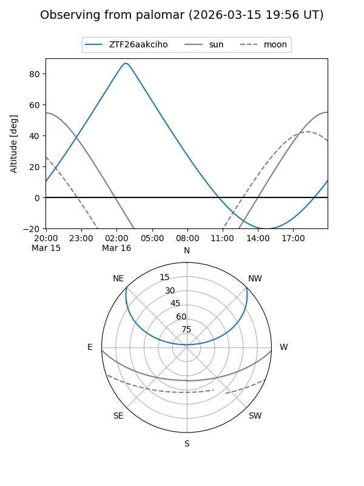
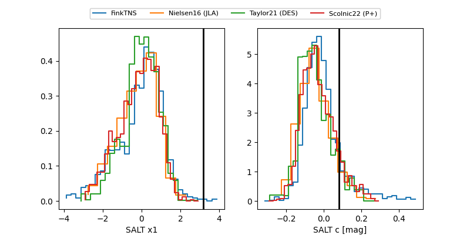

ZTF26aakciho
Target ZTF26aakciho at 2026-03-19 05:20
Aliases and brokers:
FINK: link
Lasair: link
ALeRCE: link
alt names
ZTF26aakciho (ztf,fink_ztf)
Coordinates:
equatorial (ra, dec) = 98.0143,+36.33618
equatorial (HMS+DMS) = 06:32:03.43,+36:20:10.23
galactic (l, b) = (178.1084,+12.10042)
Flags:
Photometry:
last ztfg=20.05, ztfr=19.69
6 ztfg, 3 ztfr detections
Lightcurve

Visibility


Additional plots
